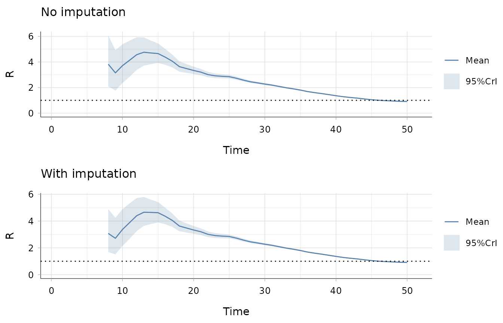
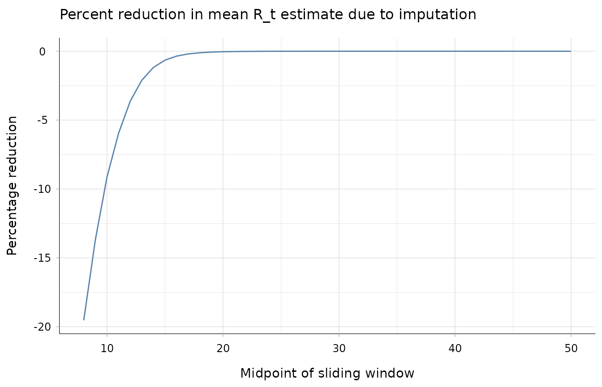

vignettes/EpiEstim_backimputation.Rmd
EpiEstim_backimputation.RmdWhen a novel pathogen arises in a population, time may be needed before surveillance systems are set up and can identify infected individuals. As such, the start of an epidemic may differ from the date of first reported case, and epidemiologists may need to take into account the impact of unobserved generations of infections on their analyses.
In the case of EpiEstim, the first estimates of the reproduction number (Rt) are sensitive to the recent incidence history. Indeed, the denominator of the estimator depends on the term: where denotes incidence and the serial interval distribution. If the first cases are not observed, this sum will be truncated, hence the denominator will be underestimated and infectiousness overestimated.
In Brizzi, O’Driscoll and Dorigatti (10.1093/cid/ciac138), we
proposed a simple exponential growth model to impute missed generations
of infections, leading to a reduction in bias in early Rt
estimates. This can now be implemented through EpiEstim’s
estimate_R function, by setting the
backimputation_window to an integer greater than 2,
specifying the number of observations used to fit the exponential growth
model.
In short, the method combines the strength of the exponential growth to estimate the basic reproduction number R0 together with the capabilities of EpiEstim to detect changes in transmission dynamics.
To quickly introduce early overestimation issue, consider the case of constant incidence, for example . We would expect Rt to be constantly close to 1. However, estimates of Rt are decreasing, suggesting a reduction in pathogen infectiousness.
incid_constant <- rep(10, 50)
config <- make_config(list(mean_si = 7, std_si = 4))
estimate_R(incid = incid_constant, config = config, method = "parametric_si") |>
plot("R")
#> Default config will estimate R on weekly sliding windows.
#> To change this change the t_start and t_end arguments.The problem here is that EpiEstim implicitly assumes the 10 cases in
day 2 to have been generated by cases in day 1! If this seems like an
unlikely scenario, perform backimputation by setting
imputation_window to an integer larger than 2. When working
with daily incidence, we suggest to set this window to at least 5
observations.
estimate_R(
incid = incid_constant,
backimputation_window = 7,
config = config,
method = "parametric_si") |>
plot("R")
#> Default config will estimate R on weekly sliding windows.
#> To change this change the t_start and t_end arguments.In this case, the estimates are constant, as expected.
Let us now consider some real world data: UK COVID-19 deaths from 2020. As reporting of deaths is more accurate and reliable than case reporting, it is unlikely that a large proportion of people died of COVID before the first reported death. However, we can use this dataset to show how left-censoring incidence may affect traditional EpiEstim estimates, and how the adjustment behaves more robustly. We focus on the first 50 days of reports.
data(covid_deaths_2020_uk)
max_t <- 50
incid_covid <- covid_deaths_2020_uk$incidence$Incidence[1:max_t]
config_covid <- make_config(list(si_distr = covid_deaths_2020_uk$si_distr))We first consider a scenario where the back-imputation shouldn’t be necessary: i.e. when no generations of infections (or deaths) are missed. We would hope that performing back-imputation would not drastically lower the estimates for the reproduction number. Indeed, this is the case.
no_truncation_no_imputation <- estimate_R(
incid = incid_covid,
method = "non_parametric_si",
config = config_covid
)
#> Default config will estimate R on weekly sliding windows.
#> To change this change the t_start and t_end arguments.
no_truncation_with_imputation <- estimate_R(
backimputation_window = 8,
incid = incid_covid,
method = "non_parametric_si",
config = config_covid
)
#> Default config will estimate R on weekly sliding windows.
#> To change this change the t_start and t_end arguments.
gridExtra::grid.arrange(
plot(no_truncation_no_imputation, "R") + ggtitle("No imputation"),
plot(no_truncation_with_imputation, "R") + ggtitle("With imputation")
) The reduction in Rt estimates is strongest in the early stages, and vanishes with time.
time <- no_truncation_no_imputation$R[, c("t_start", "t_end")]
estimates <- data.frame(
x = time$t_end,
original = no_truncation_no_imputation$R[, "Mean(R)"],
adjusted = no_truncation_with_imputation$R[, "Mean(R)"]
)
ggplot(estimates, aes(x=x, y=(adjusted-original)/original * 100 )) +
geom_line(colour="#5983AB") +
theme_epiestim() +
labs(
title = "Percent reduction in mean R_t estimate due to imputation",
x = "Midpoint of sliding window",
y = "Percentage reduction"
)
#> Warning: The `size` argument of `element_line()` is deprecated as of ggplot2 3.4.0.
#> ℹ Please use the `linewidth` argument instead.
#> This warning is displayed once every 8 hours.
#> Call `lifecycle::last_lifecycle_warnings()` to see where this warning was
#> generated.
In this case, the shape of the Rt estimates are similar for the two methods. Still, the imputation reduces the first Rt estimate from 3.8 to 3.1.
Now let us assume the first two weeks of deaths were not observed. How would the two methods compare?
trunc_t <- 14
# fit EpiEstim
truncation_no_imputation <- estimate_R(
incid = incid_covid[ -(1:trunc_t)],
method = "non_parametric_si",
config = config_covid
)
#> Default config will estimate R on weekly sliding windows.
#> To change this change the t_start and t_end arguments.
truncation_with_imputation <- estimate_R(
backimputation_window = 10,
incid = incid_covid[ -(1:trunc_t)],
method = "non_parametric_si",
config = config_covid
)
#> Default config will estimate R on weekly sliding windows.
#> To change this change the t_start and t_end arguments.
# specify classes
truncation_with_imputation$R$imputation <- TRUE
truncation_no_imputation$R$imputation <- FALSE
res1 <- truncation_with_imputation$R
res2 <- truncation_no_imputation$R
test <- data.frame(x = (res1$t_start + res1$t_end)/2,
y = res1$`Mean(R)`,
ymin = res1$`Quantile.0.025(R)`,
ymax = res1$`Quantile.0.975(R)`,
imputation = res1$imputation)
test2 <- data.frame(x = (res2$t_start + res2$t_end)/2,
y = res2$`Mean(R)`,
ymin = res2$`Quantile.0.025(R)`,
ymax = res2$`Quantile.0.975(R)`,
imputation = res2$imputation)
ggplot(test, aes(
x = x,
y = y,
ymin = ymin,
ymax = ymax,
color = imputation,
fill = imputation,
linetype = imputation
)) +
geom_ribbon(alpha = .3, color = NA) +
geom_ribbon(data = test2, alpha = .3, color = NA) +
geom_line() +
scale_color_manual(values=c("#5983AB", "#E5A3A3")) +
scale_fill_manual(values=c("#5983AB", "#E5A3A3")) +
labs(x = "Midpoint of sliding window", y = "EpiEstim Posterior Mean") +
theme_epiestim() +
geom_line(data = test2) +
labs(x = "Midpoint of sliding window", y = "EpiEstim Posterior Mean") +
theme_bw() +
theme(legend.position = "bottom")With truncated deaths data, the imputation procedure brought the Rt mean estimate from 3.9 to 2.8 . This is closer to the estimate obtained from the complete data at the same time point (3).
The back imputation process is not always necessary, and is not suggested in the following cases.
Andrea Brizzi, Megan O’Driscoll, Ilaria Dorigatti, Refining Reproduction Number Estimates to Account for Unobserved Generations of Infection in Emerging Epidemics, Clinical Infectious Diseases, Volume 75, Issue 1, 1 July 2022, Pages e114–e121, https://doi.org/10.1093/cid/ciac138